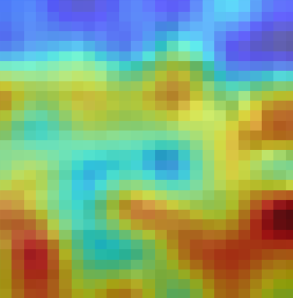
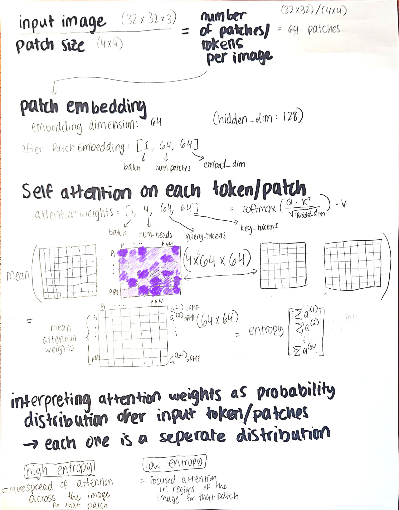
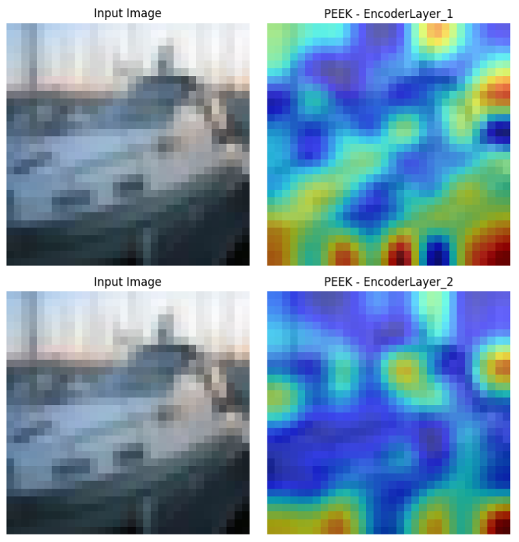
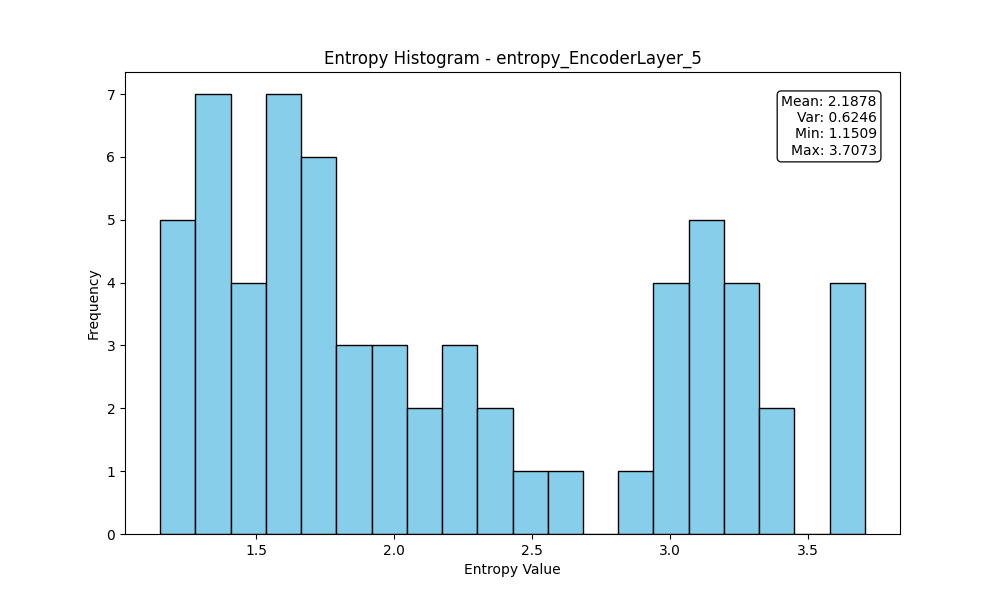
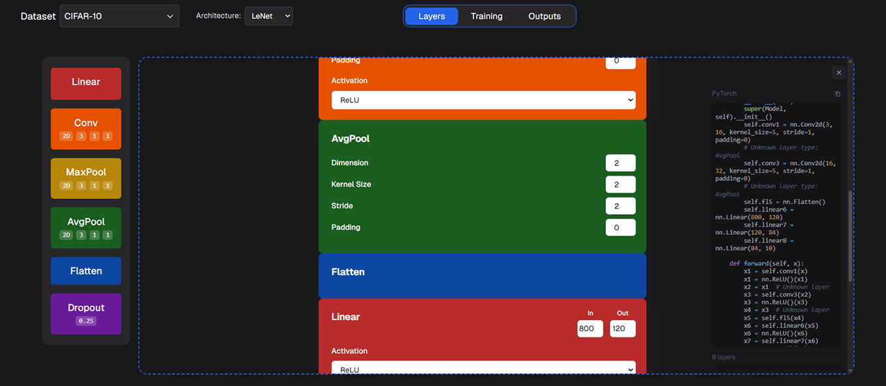
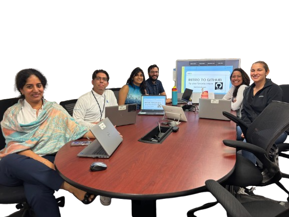
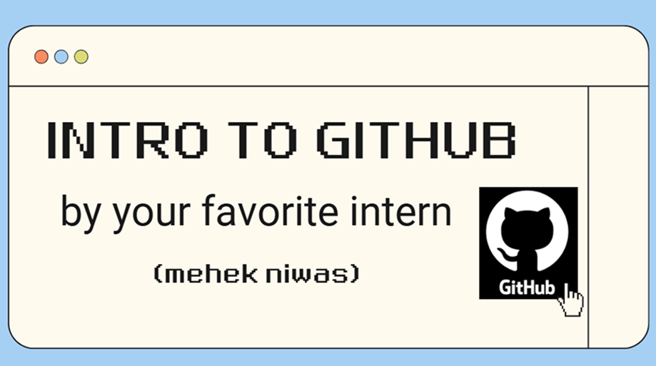
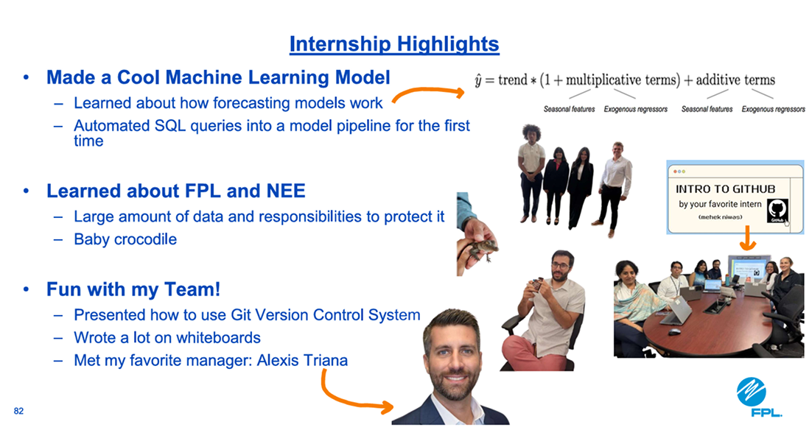
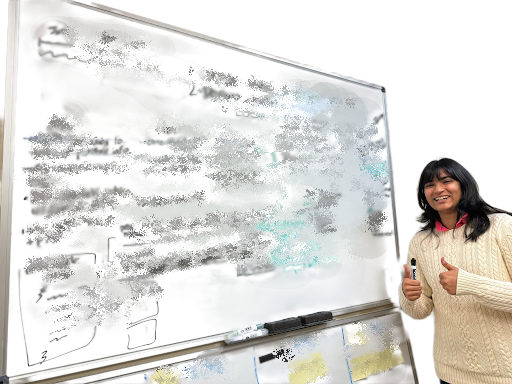
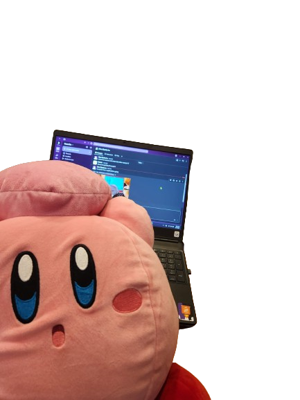
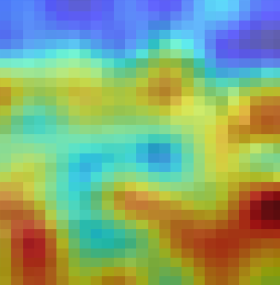
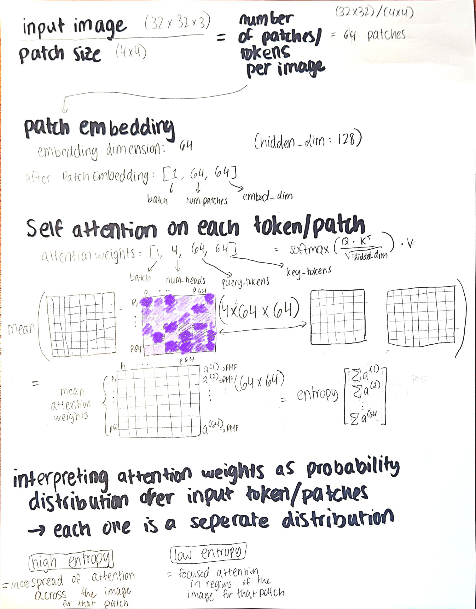
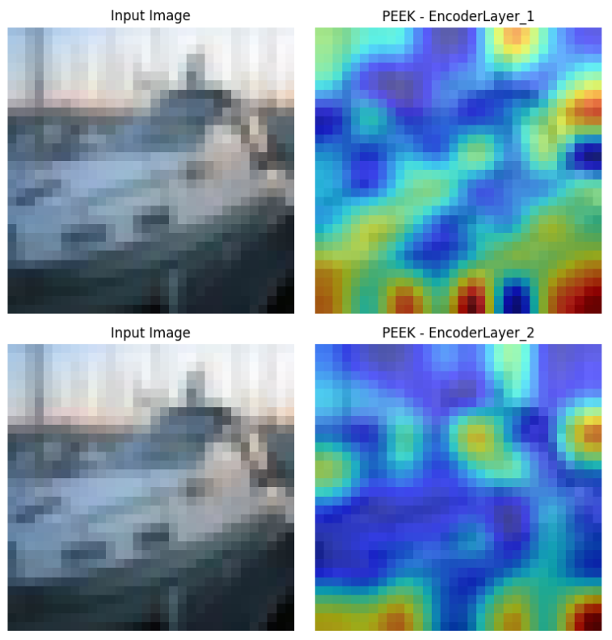
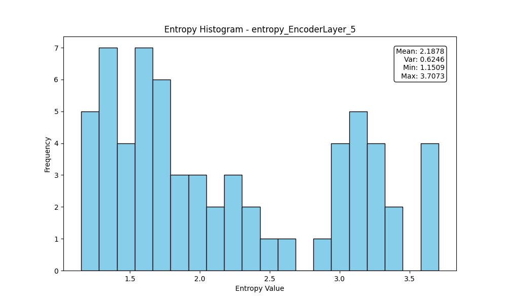
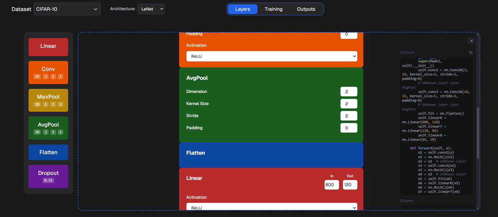
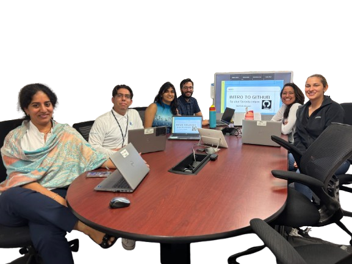
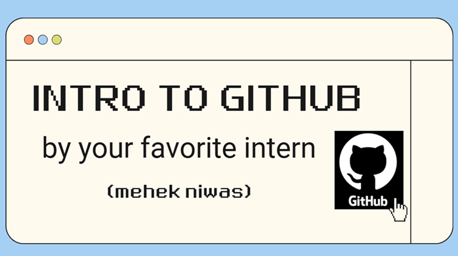
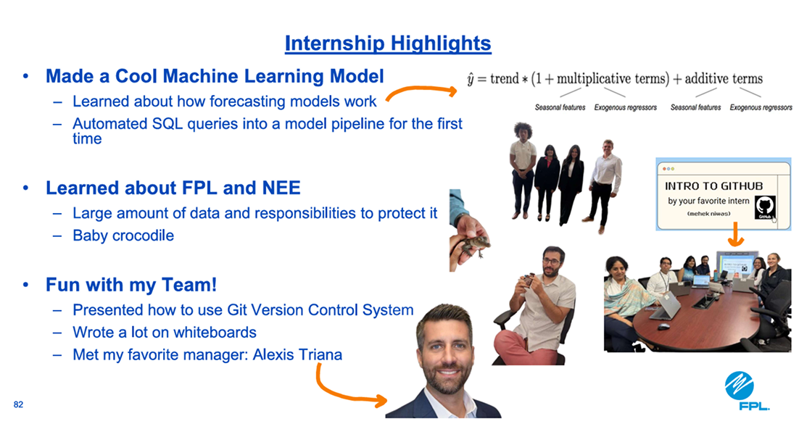
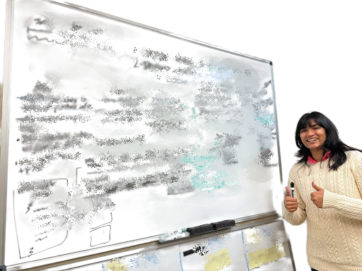
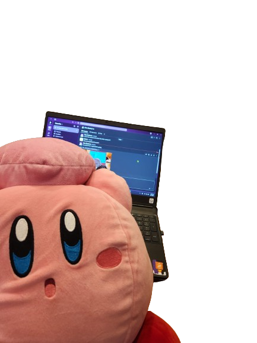

 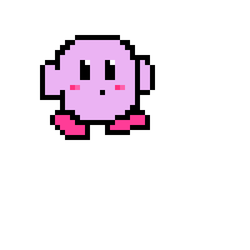
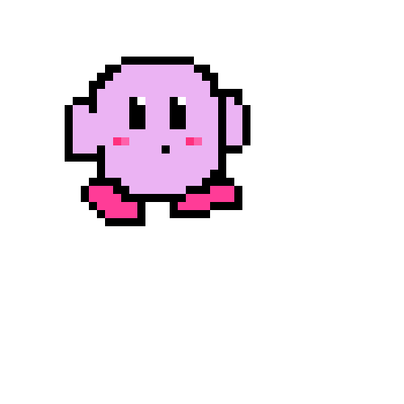
 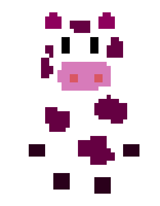
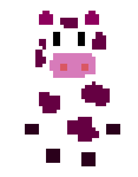
hello!
i’m a cs student at rutgers university.
currently, im exploring entropy propagation in vision transformers for interpretable ai research
making machine learning & ai more accessible motivates a lot of my work. my favorite project is scraply, a website designed to help beginners get started with deep learning.
i teach and run ml/ai workshops at the rutgers ieee club and blueprint club. (come join!)
i've also had the chance to apply ml in my internship projects. last summer, i built forecasting models at nextera energy using data from ~20 million calls. then later i got to work with describe, a healthtech startup based in miami.
outside of computer science, i recently started learning pixel art!
and sometimes i like to touch grass too